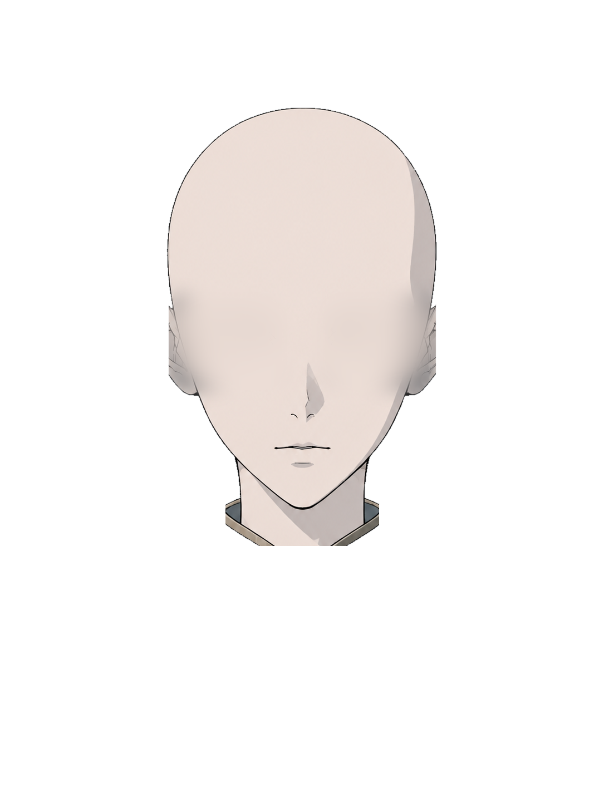
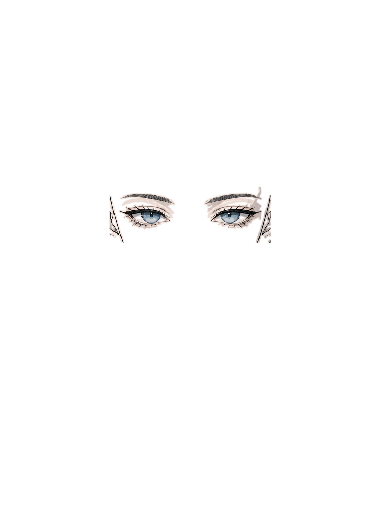
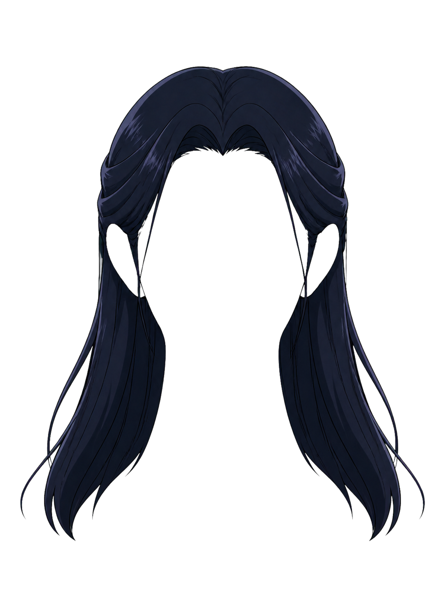
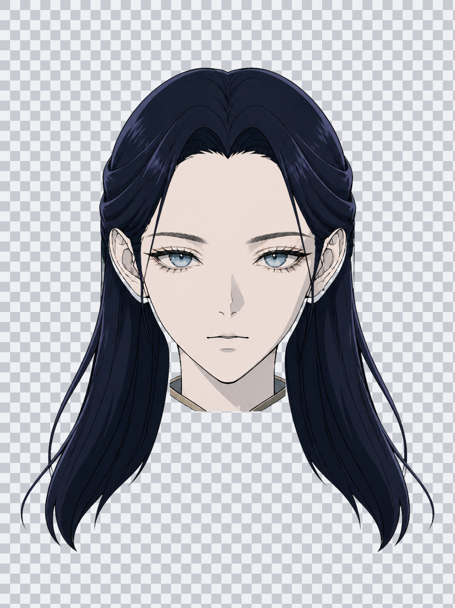
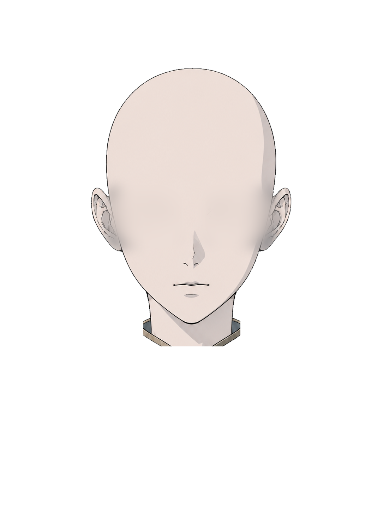
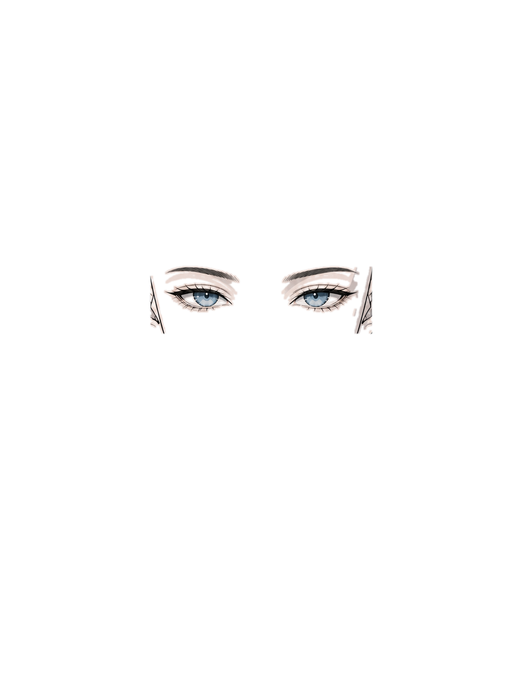
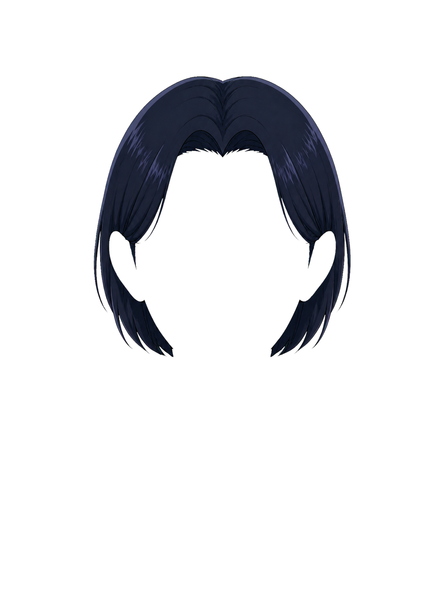
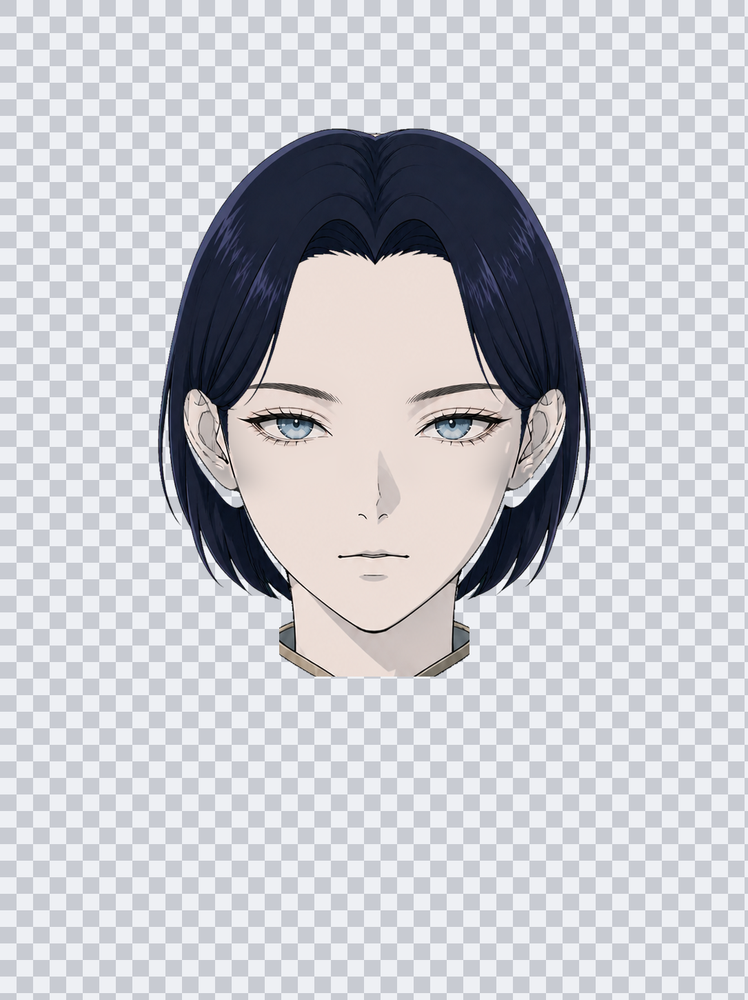

正式透明部件审查
所有脸型、眼型与发型使用相同画布和锚点。棋盘格用于检查透明边缘、错位、残留皮肤与跨模块投影。
组合 01 · 尖脸 / 圆瞳 / 中分长直发

眼型 · round
固定眼部窗口，保留完整眼睛细节
发型 · long
按发色所有权提取，无面部残留
三层合成
检查眼位、发际线、耳部开口和整体对齐组合 02 · 椭圆脸 / 杏仁眼 / 中分短波波头

脸型 · oval
由第二套确认母版确定性提取，保留鼻口耳颈结构
眼型 · almond
仅提取眼部内容，完整保留睫毛、虹膜和高光
发型 · bob
按统一锚点注册，无面部残留或跨层投影